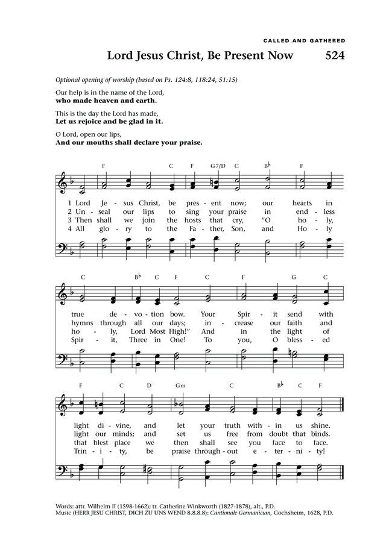
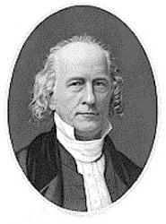

|
|
|
|
1 Fling out the banner! let it float 2 Fling out the banner! heathen lands 3 Fling out the banner! sin-sick souls 4 Fling out the banner! let it float Amen. |
524展得圣旗在高处飘
1.展得胜旗在高处飘！光华充满万里云霄，
救主舍身的十字架，向你永远辉煌烛照。 2.展得胜旗广招万民！物竞场中、终被死吞， 及早回头、归向基督！肉体化成不朽荣身。 3.展得胜旗飘扬高空！庄严真理，万方钦崇， 无数新邦，竞来入世，万灵受浸，在祂光中。 4.展得胜旗欣乘长风！冲破阴翳海阔天空， 非才非力非靠人为，得胜全仗十架救功。 |
|
https://www.mred365.cn/szxg/7527.html
 |
|
|
|
|

| Text: | Fling Out the Banner! Let It Float |
| Author: | George W. Doane, 1799-1859 |
| Tune: | WALTHAM (Doane) |
| Composer: | John B. Calkin, 1827-1905 |
| Short Name: | George W. Doane |
| Full Name: | Doane, George Washington, 1799-1859 |
| Birth Year: | 1799 |
| Death Year: | 1859 |
Doane, George Washington,

D.D. Bishop Doane was born at Trenton, New Jersey, May 27, 1799, and graduated at Union College, Schenectady, New York. Ordained in 1821, he was Assistant Minister at Trinity Church, New York, till 1824. In 1824 he became a Professor at Trinity College, Hartford, Conn.; in 1828 Rector of Trinity Church, Boston; and, in 1832, Bishop of New Jersey. He founded St. Mary's Hall, Burlington, 1837, and Burlington College, Burlington, 1846. Died April 27, 1859. Bishop Doane's exceptional talents, learning, and force of character, made him one of the great prelates of his time. His warmth of heart secured devoted friends, who still cherish his memory with revering affection. He passed through many and severe troubles, which left their mark upon his later verse. He was no mean poet, and a few of his lyrics are among our best. His Works, in 4 volumes with Memoir by his son, were published in 1860. He issued in 1824 Songs by the Way, a small volume of great merit and interest. This edition is now rare. A second edition, much enlarged, appeared after his death, in 1859, and a third, in small 4to, in 1875. These include much matter of a private nature, such as he would not himself have given to the world, and by no means equal to his graver and more careful lyrics, on which alone his poetic fame must rest.The edition of 1824 contains several important hymns, some of which have often circulated without his name. Two of these are universally known as his, having been adopted by the American Prayer Book Collection, 1826:--
"FLING OUT THE BANNER"
"Thou hast given a banner to them that fear Thee, that it may be displayed
because of the truth" (Ps. 60.4)
INTRO.:
A song which encourages us to hold high the banner of truth that God has given us is "Fling Out The Banner." The text was written by George Washington Doane (1799-1859). It was produced in 1848 for a flag-raising service at the St. Mary’s School, Burlington, NJ, first published in Verses for 1851 Commemoration of the Third Jubilee of the S. P. G. (Society for the Propagation of the Gospel), and became famous as a hymn after being used in the 1875 Songs By The Way. Doane authored several other hymns, the best known of which are probably "Thou art the way, to Thee alone," and "Softly Now the Light of Day."
The tune (Waltham, Camden, or Doane), was composed for this text by Jean (John) Baptiste Calkin, who was born at London, England, on Mar. 16, 1827-1905). His first musical instruction came from his father James, a well-known music teacher. At the age of twenty, he succeeded E. G. Monk as organist at St. Columba’s College in Rathfarnham, Ireland, near Dublin. Six years later he returned to Lndon, where he held various organist positions and produced several musical works, especially choral settings of Matins, Vespers, and Holy Communion services for Anglican worship. This melody was first published in The Hymnary of 1872. It it is perhaps best known for its use with William Wadsworth Longfellow’s holiday carol, "I Heard the Bells on Christmas Day." In 1883 Calkin was appointed to the faculty of the Guildhall School of Music. Also a member of the Council of Trinity College, London, and a Fellow of the Royal College of Organists, he died in London on Apr. 15, 1905.
Among hymnbooks published by members of the Lord’s church during the twentieth century for use in churches of Christ, the hymn appeared in the 1925 edition of the 1921 Great Songs of the Church (No. 1) and the 1937 Great Songs of the Church No. 2 both edited by E. L. Jorgenson; the 1963 Abiding Hymns edited by Robert C. Welch; and the 1965 Great Christian Hymnal No. 2 edited by Tillit S. Teddlie. Today, it may be found in the 2007 Sacred Songs of the Church edited by William D. Jeffcoat. The tune, with the hymn "Life Up, Lift Up Your Voices Now" translated from the Greek by John Mason Neale in his 1854 Carols for Eastertide, was used in the 1963 Christian Hymnal edited by J. Nelson Slater, and is found in the 1986 Great Songs Revised edited by Forrest M. McCann.
"Fling Out The Banner" is one of this nation’s first great "missionary hymns."
I. Stanza 1 points out that our banner is related to the cross of Christ
"Fling out the banner! let it float Skyward and seaward, high and wide;
The sun that lights its shining folds, The cross on which the Savior died."
A. "Skyward and seaward, high and wide," suggests the need for the gospel to be
preached everywhere: Mk. 16.15-16
B. There is a sun which lights its shining folds: Mal. 4.2, Jn. 8.12
C. This light is pictured as coming from the cross on which the Savior died: 1
Cor. 1.18
II. Stanza 2 points out that this banner is the object of angels’ concern
"Fling out the banner! angels bend In anxious silence o’er the sign,
And vainly seek to comprehend The wonder of the love divine."
A. Angels are spirits sent forth to minister for those who will be inherit
salvation: Heb. 1.13-14
B. Yet, it is said that revelation of God’s plan in the prophets and the gospel
is something that angels desire to look into: 1 Pet. 1.10-12
C. In this revelation is manifested the wonder of the love divine: Rom. 5.8
III. Stanza 3 points out that this banner should be seen by heathen lands
"Fling out the banner! heathen lands Shall see from far the glorious sight;
And nations, crowding to be born, Baptize their spirits in its light."
A. This banner is not only the subject of angels’ concern but should also be
the concern of heathen lands: Gal. 1.16, 2.9
B. Therefore, disciples are to be made of all the nations, including those
crowding to be born: Matt. 28.18-20
C. These nations can baptize their spirits in its light as individuals hear and
obey the gospel in baptism: Gal. 3.26-28
IV. Stanza 4 points out that this banner should be accepted by sin-sick souls
"Fling out the banner! sin-sick souls Who sink and perish in the strife,
Shall touch in faith its radiant hem, And spring immortal into life."
A. Spiritually, mankind is perishing because all have sinned and come short of
the glory of God: Lk. 15.17, Rom. 3.23
B. However, just as the woman with the issue of blood touched the hem of
Christ’s garment and was made whole, whosoever will may come to receive the
benefits of this banner: Matt. 9.20-22, Rev. 22.17
C. The result is that they will spring immortal into the life that Jesus came
to bring: Jn. 5.24, 10.10
V. Stanza 5 points out that this banner is for everyone everywhere
"Fling out the banner! let it float Skyward and seaward, high and wide;
Our glory only in the cross; Our only hope, the crucified."
A. Repeating the first two lines of the opening stanza, the author again
suggests the need for the gospel to be preached everywhere: Col. 1.23
B. One reason for working to see that the gospel is preached everywhere is that
we glory only in the cross: Gal. 6.14
C. Therefore, our only hope is the Crucified one, Jesus Christ: Col. 1.27
VI. Stanza 6 points out that this banner is not anything of our own merit
"Fling out the banner! wide and high, Seaward and skyward, let it shine;
Nor skill, nor might, nor merit ours; We conquer only in that sign."
A. Once again, the author repeats nearly the first two lines of stanza one, but
changes the order and alters the thought to "let it shine," which is
accomplished as God’s people let their lights so shine: Matt. 5.14-16
B. Yet, we must recognize that it is not the result of our own skill, might, or
merit: Zech. 4.6
C. Rather, we can conquer only in the sign of the cross: Rom. 8.37
CONCL.:
Many today might look at this hymn as being too "paternalistic" or "imperialistic" because it suggests that all nations must hear and respond to the gospel to be acceptable to God. This may explain its absence in many modern hymnbooks. A lot of people who call themselves "Christians" today have been infected with multiculturalism and have decided that it is wrong to preach the gospel (which they interpret as being "Western") to other cultures because, they say, each group needs to "find God" (or whatever) in its own way. However, those who accept the truth of the gospel will continue to see the need to "Fling Out The Banner."